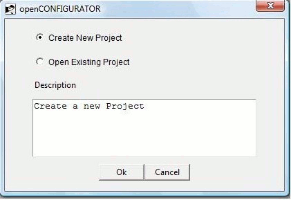
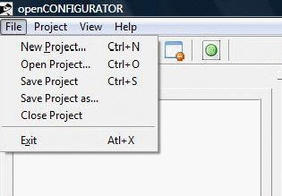

New project creation can be done in two ways :
a) Launch openCONFIGURATOR from Start → All Programs → openCONFIGURATOR. The user can create a new project or open an existing project as shown in Figure 1.

Figure1
b) From the top menu bar File New Project

Figure 2